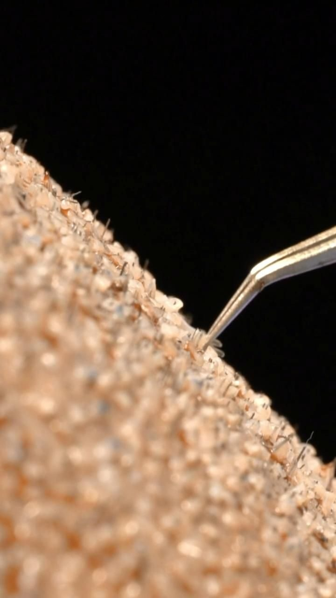

A avaliação já é o primeiro passo
A consulta define a técnica, o desenho e o planejamento do seu caso. Você sai dela sabendo exatamente o que é possível e como funciona o seu procedimento.

A técnica de cirurgia capilar mais usada no país, agora no Rio de Janeiro e em Ubá, Minas Gerais.
Dra. Bárbara Delazari Cirurgia capilar CRM 52.117969-1

Cada folículo é retirado individualmente da área doadora e implantado respeitando o desenho, a direção e a inclinação natural dos seus fios. Por ser minimamente invasiva, a recuperação é mais rápida, o procedimento é feito com anestesia local e, em muitos casos, sem precisar raspar toda a cabeça. O resultado acompanha o padrão de crescimento do seu próprio cabelo.
A consulta define a técnica, o desenho e o planejamento do seu caso. Você sai dela sabendo exatamente o que é possível e como funciona o seu procedimento.
Eu analiso como a sua queda evoluiu pra saber se ela já estabilizou. Operar na hora certa protege o seu resultado a longo prazo.
O planejamento parte da sua densidade real. É ela que define o que é possível e o que faz sentido no seu caso, antes de qualquer promessa.
Eu planejo considerando sua idade, seu biotipo e o desenho natural dos seus fios. O bom transplante é o que passa despercebido.

Escolhi dedicar minha carreira a uma só coisa: o implante capilar. Na técnica FUE, encontrei o que acredito que um transplante deve ser: fio a fio, planejado pra durar e pra passar despercebido. Acompanho cada pessoa por inteiro, do diagnóstico da queda ao pós-operatório, porque resultado natural se constrói em cada etapa.
Toda indicação é individual — as respostas abaixo valem como orientação geral e são detalhadas na consulta.
Esses tratamentos podem ajudar a manter os fios que você ainda tem, mas não preenchem as áreas onde o cabelo já foi perdido. O implante capilar redistribui os seus próprios folículos para essas regiões. Se é o seu caso, é a avaliação que confirma.
Em muitos casos, sim. A técnica FUE permite implantar fios em regiões de cicatriz — de acidente ou de cirurgia —, respeitando as condições da pele no local. A viabilidade é definida na avaliação individual.
A proposta da FUE é uma recuperação tranquila. O inchaço, quando ocorre, costuma ser leve e controlado, e a maioria das pessoas retoma a rotina em poucos dias — sempre conforme a orientação médica no seu caso.
O planejamento é individual e respeita a sua linha frontal, o ângulo de saída dos fios e a densidade da região — para um resultado natural e coerente com o seu rosto.
Os fios implantados passam por uma fase de queda e depois voltam a crescer. O resultado vai se formando ao longo dos meses e é acompanhado de perto no pós-operatório, conforme a evolução individual.